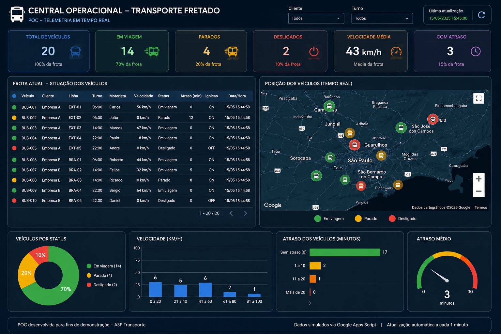

Data analytics · Technical case study
Fleet Telemetry Dashboard
A proof of concept for a chartered transport operations center, combining fleet indicators, vehicle conditions, geographic visualization and automatic data updates in a single web interface.

The project
I developed this proof of concept to explore how operational telemetry data could be transformed into an actionable control panel for chartered transport. It groups key metrics, a vehicle status table, location pins and charts to support monitoring at a glance.
Operational indicators
Total vehicles, in transit, stopped, offline, average speed and delayed vehicles.
Geographic overview
An interactive map built with Leaflet and OpenStreetMap, with status-based markers.
Fleet detail
Vehicle, customer, route, shift, driver, speed, ignition, delay and date/time in a detailed table.
Monitoring charts
Visual summaries of fleet status, speed bands and delay intervals.
Data flow and architecture
Google Apps Script generates, transforms and periodically updates the data stored in Google Sheets. The dashboard consumes the Apps Script Web App response through JSONP and refreshes approximately once per minute. The mapping layer uses Leaflet with OpenStreetMap.
Technologies
Future evolution
The current dataset is simulated. The architecture was conceived as a starting point for connecting to an actual telemetry API once access, data structure, scale and business requirements are defined.